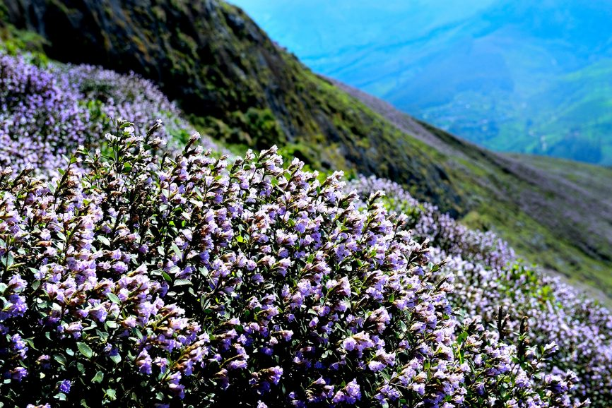

Idukki, a landlocked district of Kerala, is one of the most nature-rich areas in Kerala with more than half of the area covered with forest. This rugged hill resort is known for its wildlife sanctuaries, beautiful bungalows, tea factories, rubber plantations and forests. Idukki's speciality lies in 650 feet long and 550 feet high arch dam across the Kuravan Kurathi mountain, which is the largest in the country.
Anamudi, which is the highest peak in India, south of the Himalayas, is also located in Idukki. Idukki is one of the districts in the state that has abundant scope for promotion of eco-tourism if proper infrastructure and promotional activities are provided.Places in Idukki is full of cliffs, lush greenery, lagoons, tranquil rivers and cascading waterfalls that hypnotize the tourists and leave them with everlasting memories.
Having names of Painavu, arch dam, poonchira, Idukki shows a variety in its attractions.The 3 rivers Thodupuzhayar, Periyar, and Thalaya along with their tributaries keep Idukki evergreen. They are not only a source for irrigation and power generation but also a place for the existence of diverse flora and fauna that add charm to the Idukki. The places to visit in Idukki range from popular hill stations, Wildlife Sanctuaries, to majestic waterfalls, dams, and not to forget, the historical places.
Idukki Arch Dam, an engineering marvel, is located in the South-Indian state of Kerala. It is an arch dam with a double curvature and is built on River Periyar. Precisely, the dam is constructed in a gorge between two hills, Kuravathi and Kuravan. It is at the height of about 550 feet and is a breathtaking sight in the otherwise rugged terrain along which has been built.
With this height, it is one of the highest arch dams in Asia. Because of its massive size, the dam can be seen from quite some distance and the sight of the structure in between the granite hills is breathtaking. The surrounding is lush green, and the reservoir serves as a quick getaway for locals. As part of promoting hydel tourism, boating in the reservoir is open for tourists.
Located in the Idukki district of Kerala, Mathikettan Shola National Park is between other national reserve forests such as Eravikulam National Park and Pampadam Shola National Park. Established initially to encourage cardamom plantation, it was declared as a national park in 2003 to protect the environment, and it's ecology, flora and wildlife. It now stands as a conservatory for wildlife and flora alike.
The sanctuary, flanked on 3 sides by the tranquil waters of Idukki Lake, is housed amidst picturesque settings of tropical evergreen & semi-evergreen forests, meadows, and deciduous trees.The Wildlife Sanctuary, one of the places to visit in Idukki, houses hordes of wild elephants.The other species from the animal kingdom include bison, sambar, deer, wild dogs, jungle cats, Malabar Giant Squirrel, wild boars, and tigers. Reptilians such as Cobra, viper, krait, etc will bewilder the visitor, while avian species Malabar grey hornbill, Purple Sunbird, Golden Oriole, and Black bulbul enchant him.
Ramakkalmedu is a tiny hamlet in the Idukki district close to the Kerala-Tamil Nadu border. Located 40kms away from Thekkady, the scenic beauty of Ramakkalmedu has turned it into a fantastic tourist place with thousands of people visiting it. From here, one can get beautiful views of the sunrise in the eastern hills and the sunset on the eastern mountains.
The thick evergreen forest surrounding the mountains which are situated adjacent to the site and serving as a natural habitat for a variety of birds and animals provide a beautiful view worth looking at. Since Ramakkalmedu hill station is situated at an elevation of 3560 feet from sea level, the area is famous for carrying out adventure activities including hiking, paragliding, trekking, and camping.

Located a 45 - minute drive away from Munnar, the Eravikulam National Park (also known as Rajamalai Wildlife Sanctuary), houses a rich and diverse variety of flora and fauna and is a UNESCO world heritage site. Elephant, Nilgiri langur, Nilgiri marten, Atlas moth (largest in the world), lion-tailed macaque, small-clawed otter, and a rare tiger or leopard are some of the main animal species that can be spotted here.
Eravikulam National Park was managed as a game reserve by the Kanan Devan Hills Produce Company before 1971. The control was taken over by the Karnataka Government in 1971, and it was declared a national park in 1978.
Located near Kottayam-Idukki Border, Wagamon, popularly known as Vagamon, is a quiet offbeat hill station in Kerala. With a pleasant climate throughout the year, this breathtaking tourist spot has meandering rivulets and lush green hills surrounding it. The tea garden, pine forests, waterfalls, mesmerising meadows are all that makes Vagamon the perfect getaway.
Vagamon is gradually gaining attention for being one of India’s topmost adventure tourism spot, with activities such as trekking, rock climbing and paragliding being offered to tourists. Cycling through the mountains is another interesting activity that visitors can participate in to get a better feel of the place. The Kerala Tourism Department and the Adventure Sports and Sustainable Tourism Academy (AASTA) celebrates an International Paragliding festival in Vagamon each year, which is very popular with both the tourists as well as the locals.